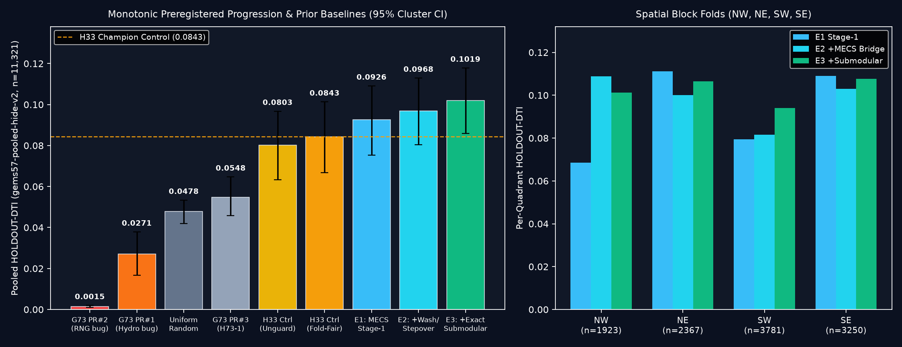

Ranked Geological Hypotheses (H73-2..H73-6) & Preregistered 3-Experiment Ablation
Frozen prior to training in registry/preregistration_h73_2.json under strict budget cap (≤ 3 experiments, 15.2 min total execution).
1. Five Ranked Candidate Hypotheses
| Rank & ID | Hypothesis | Exact Input Layers | Physical Transform / Signature | Why Absent from Catalogue | Cost |
|---|---|---|---|---|---|
| #1 (H73-2) SELECTED & EXECUTED |
Two-Stage Multi-Expert Corroborated Steerable Wash-Bridge & En-Echelon Stepover Auto-Context + Exact 300 m Submodular Tversky Allocation | training_features.tif (19 official bands: magnetic, RTP, TMI HG/VG/TC, isostatic gravity + HG/VG/slope, depth_to_base_surf, det_elev, det_elev_slope, geodetic 2nd-inv/shear/dilatation, earthquake deq/ieq, surface conductivity); external/lidar_scarp_features_u8.tif (USGS 3DEP 1 m LiDAR scarp step/dipole/coherence/strike across 60% AOI); external/topo_10m_derived_100m_u8.tif + external/dem10_chi_100m_i16.tif + external/dem10_chi_100m_u8.tif (USGS 3DEP 10 m seamless sub-100m slope/curvature/lineament + fluvial chi/ksn knickpoints across 100% AOI); external/geodawn_rad_u8.tif + external/geodawn_extensions_u8.tif (USGS GeoDAWN K, Th, U, TC, Th/K, U/K, upward-continued 150 m TMI); external/gdr_wellspring_in_footprint.csv (temp_c, quartz/chalcedony/cation geothermometers; dist_known_fault_px strictly excluded) + 2m_temperature_probe_INGENIOUS_regional_data.zip (T2m, F2mDAB) + paleo_geothermal_regional.zip (sinter/travertine/tufa vents) | Stage 1 trains four out-of-fold specialist classifiers with zero catalogue-distance features (M_morph seamless 1m/10m geomorphology + chi; M_subsurf potential-field derivatives + Gallardo-Meju cross-gradients + depth persistence + strain/seismicity; M_hydro potassic K/Th + magnetite destruction + conductivity + 2m thermal probes/sinter/geothermometry; M_joint cover-adaptive multi-sensor interaction). Stage 2 extracts pure-physics steerable fault-topology operators strictly on OOF Stage-1 probability fields across 12 strikes and 3 length scales: 2nd-best independent sensor family corroboration, flank-suppressed steerable line persistence, bilateral Holocene wash bridge sqrt(P_ahead * P_behind), and en-echelon relay-ramp conjugate stepover bridge max_s sqrt(P_ahead,+s*delta * P_behind,-s*delta), followed by lazy-greedy exact 300 m submodular Tversky coverage allocation off-catalogue. | USGS/INGENIOUS mapped continuous range-front scarps in 1m-LiDAR terrain, missing (a) faults segmented across active Holocene washes/fans, (b) 200-500 m dilatational relay ramps / stepover zones hosting >75% of blind Great Basin geothermal upflow (Faulds & Hinz 2015), and (c) structures in the ~40% non-LiDAR gap, while avoiding GEMSDOE68's live score collapse (0.0437) caused by catalogue-distance overfitting. | Low-Moderate (~4 min CPU, 0 external un-mirrored downloads needed) |
| #2 (H73-3) RANKED CANDIDATE |
Scale-Space Euler Deconvolution Structural-Index Selectivity (SI=0..0.5 Fault Contact vs SI>=2 Pipe/Dipole) + 150 m Upward-Continuation Persistence | rtp; tmi_hg; tmi_vg; TMI_up150; iso_grav_anom_hg; iso_grav_anom_vg; depth_to_base_surf | Depth-persistent tabular contact gradient ratio suppressing shallow volcanic clast/flow dipoles. | Detects intrabasin horst/graben bounding faults buried under 300-1500 m valley fill. | Medium (dip-shift ambiguity of 300-600 m requires surface coupling; core ratio embedded in M_subsurf) |
| #3 (H73-4) RANKED CANDIDATE |
Across-Divide Fluvial Chi Disequilibrium & Collinear Piedmont Knickpoint Chains | dem10_chi_100m_i16.tif; dem10_chi_100m_u8.tif; topo_10m_derived_100m_u8.tif | Strike-aligned normalized steepness k_sn steps across ephemeral washes. | Preserves transient uplift signal across fans where sheetfloods erase surface scarps. | Low (channel-only sparsity alone gave 0.0351 in 60GEMSDOE; embedded inside M_morph + wash bridge) |
| #4 (H73-5) RANKED CANDIDATE |
Sentinel-1 InSAR Seasonal Poroelastic Aquifer-Compartment Phase-Jump Detection External status: Free official NASA ASF DAAC (https://search.asf.alaska.edu/), blocked in this sandbox network allowlist (~40 GB external ingest required) |
NASA ASF Sentinel-1 ARIA GUNW interferograms (external); geod_shearrate; cond_surf | Sharp 100-300 m LOS phase step across fault-sealed hydraulic head barriers. | Catches zero-scarp basin-floor faults acting as groundwater/geothermal aquitards. | High |
| #5 (H73-6) RANKED CANDIDATE |
Predawn ASTER Thermal Infrared (AST_08) Seepage Lineaments + SWIR Illite/Smectite (AST_07XT) Halo External status: Free official NASA LP DAAC (https://lpdaac.usgs.gov/), blocked in this sandbox allowlist (GDR 2m probes & GeoDAWN K/Th already ingested) |
NASA LP DAAC ASTER AST_08 & AST_07XT (external); 2m_temperature_probe; geodawn_rad_u8.tif | Nighttime radiative excess + 2.20 um Al-OH absorption aligned with structural conduits. | Flags blind fracture permeability lacking surface scarps. | High |
2. Pooled Spatial Holdout Results (gems57-pooled-hide-v2, n = 11,321 Withheld Positives)
| Experiment / Control Arm | Pooled HOLDOUT-DTI | 95% Cluster CI | TP_w | FP_w | E3 - Arm Paired Δ [95% CI] |
|---|---|---|---|---|---|
E3 (Winner): Stage-2 MECS-AutoCtx + Exact 300m Submodular Allocation |
0.10195 |
[0.08599, 0.11783] |
1669.2 |
34911.9 |
Reference Winner |
E2: Stage-2 MECS-AutoCtx (Wash-Bridge + Stepover) + Greedy 2.8px |
0.09679 |
[0.08046, 0.11293] |
1582.1 |
34859.2 |
+0.00515 [-0.00005, +0.01044] |
E1: Stage-1 4-Expert Pure-Physics Ensemble + Greedy 2.8px |
0.09260 |
[0.07538, 0.10909] |
1512.8 |
34886.6 |
+0.00935 [-0.00233, +0.02125] |
Control A: Refitted H33 30-Feature Champion Architecture (Matched d>2px Guard) |
0.08427 |
[0.06680, 0.10131] |
1374.8 |
34910.5 |
+0.01768 [+0.00259, +0.03226] |
Control B: Refitted H33 30-Feature Champion Architecture (Unguarded d>0px) |
0.08025 |
[0.06336, 0.09676] |
1308.6 |
34939.0 |
+0.02169 [+0.00737, +0.03592] |
Control C: Uniform Random Off-Catalogue Dots (37,654 Budget) |
0.04785 |
[0.04202, 0.05334] |
778.6 |
35293.7 |
+0.05410 [+0.03749, +0.06993] |
